<!DOCTYPE html>
<html lang="en">

<head>
  <meta charset="UTF-8">
  <meta name="viewport" content="width=device-width, initial-scale=1.0">
  <meta http-equiv="X-UA-Compatible" content="ie=edge">
  <link rel="stylesheet" href="index.css">
  <title>Document</title>
</head>

<body>
<div class="tabs">
  <ul>
    <!-- Corp. Governance -->
    <li>
      <input type="radio" name="tabs-0" checked="checked" id="tabs-0-0"/>
      <label for="tabs-0-0">Corp. Governance</label>
      <div class="corpgov">
        <p><a class="corpgov-link"
              href="https://investors.sensushealthcare.com/download/Sensus+-+Corporate+Governance+Guidelines.pdf">
          Corporate
          Governance Guidelines</a></p>
        <p><a class="corpgov-link"
              href="https://investors.sensushealthcare.com/download/Sensus+-+Code+of+Ethics+and+Business+Conduct.pdf">
          Code
          of Ethics and Business Conduct</a></p>
        <p><a class="corpgov-link"
              href="https://investors.sensushealthcare.com/download/Sensus+-+Audit+Committee+Charter.pdf"> Audit
          Committee
          Charter</a></p>
        <p><a class="corpgov-link"
              href="https://investors.sensushealthcare.com/download/Sensus+-+Compensation+Committee+Charter.pdf">
          Compensation Committee Charter</a></p>
        <p><a class="corpgov-link"
              href="https://investors.sensushealthcare.com/download/Sensus+-+Nominating+and+Corporate+Governance+Committee+Charter.pdf">
          Nominating and Corporate Governance Committee Charter</a></p>
      </div>
    </li>
    
    <!-- Management -->
    <li>
      <input type="radio" name="tabs-0" id="tabs-0-1"/>
      <label for="tabs-0-1">Management</label>
      <div class="management">
        <label for="checking">
          <div class="name">JOSEPH C. SARDANO<span class="plus"></span>
          </div>
        </label>
        <input type="checkbox" id="checking">
        <div class="hidden">
          <span class="post">Chairman and Chief Executive Officer</span><br>
          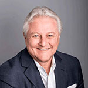
          <p class="bio">A recognized leader in the healthcare industry, Joe Sardano has spent more than 30 years in
            management and marketing. He has a successful history of introducing and commercializing new technologies
            and
            services in many areas, including electronic brachytherapy, PET and PET/CT, SPECT, MRI, lithotripsy and
            digital
            radiography. Before joining Sensus Healthcare, Sardano held leadership and management roles at CTI Molecular
            Imaging, GE Medical Systems, Siemens Medical Systems, Elscint Inc and Toshiba America Medical Systems, among
            others.</p>
        </div>
        
        <label for="checking1">
          <div class="name">KAL FISHMAN<span class="plus"></span>
          </div>
        </label>
        <input type="checkbox" id="checking1">
        <div class="hidden">
          <span class="post">Chief Technology Officer</span><br>
          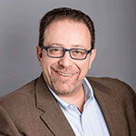
          <p class="bio">Before joining Sensus Healthcare, Kal Fishman served as Vice President of Sales and Business
            Development with an artificial intelligence image diagnostics company. He has extensive P&L experience,
            along with
            a broad customer and vendor relationship base in the diagnostic medical imaging arena. Fishman previously
            served
            as a Global Product Manager and Six Sigma Black Belt at General Electric Medical Systems where he oversaw a
            successful $20MM global product line and led the Discovery™ LS PET/CT scanner e-campaign. During his tenure
            as
            Director of Sales and Marketing with Siemens Medical Systems, Fishman established and led the successful
            preclinical imaging division—achieving an 80 percent global market share and 100 percent CAGR throughout his
            leadership. Fishman holds an industry patent for the invention and commercialization of a handheld imaging
            device
            used in nuclear medicine and PET diagnostic imaging.</p>
        </div>
        
        <label for="checking2">
          <div class="name">RICHARD GOLIN<span class="plus"></span></div>
        </label>
        <input type="checkbox" id="checking2">
        <div class="hidden">
          <span class="post">Executive Vice President</span><br>
          <span class="post">Oncology & International Sales</span><br>
          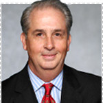
          <p class="bio">Richard Golin is an experienced healthcare business management and sales executive with an
            outstanding record in sales, operations and strategic planning. He has worked with portfolios valued at up
            to $85
            million, and consistently exceeded sales and profit goals. Before joining Sensus Healthcare, Golin served as
            a
            senior executive with world-class corporations including Toshiba Medical Systems, Siemens, CTI Molecular
            Imaging
            and Hologic.</p>
        </div>
        
        <label for="checking3">
          <div class="name">STEVE COHEN<span class="plus"></span></div>
        </label>
        <input type="checkbox" id="checking3">
        <div class="hidden">
          <span class="post">Executive Vice President</span><br>
          <span class="post">Dermatology Sales & Marketing</span><br>
          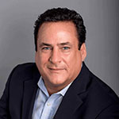
          <p class="bio">Steve Cohen has a strong history of sales and marketing in radiation therapy and diagnostic
            services.
            He is an accomplished entrepreneur and developer, skilled in shepherding new strategic business
            relationships to
            long-term recurring revenues and profits. In leadership roles with multinational organizations such as
            Technicare
            (J&J), Diasonics and Xoft, Inc., Cohen consistently delivered tangible successes.</p>
        </div>
        
        <label for="checking4">
          <div class="name">ARTHUR LEVINE<span class="plus"></span></div>
        </label>
        <input type="checkbox" id="checking4">
        <div class="hidden">
          <span class="post">Chief Financial Officer</span><br>
          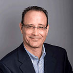
          <p class="bio">Arthur Levine has held senior finance roles in public and private companies in many industry
            sectors,
            including medical diagnostics, real estate and technology. Most recently, Levine served as Chief Accounting
            Officer of Trade Street Residential—a REIT—and played a key role in its IPO. He was also the Chief Financial
            Officer of IVAX Diagnostics, a publicly traded in-vitro diagnostics company that develops, manufactures and
            distributes diagnostic reagents, test kits and instrumentation worldwide. Levine worked at Ernst & Young in
            the
            United States and abroad. He received his Bachelor of Science from the Wharton School of the University of
            Pennsylvania and is a Certified Public Accountant.</p>
        </div>
        
        <label for="checking5">
          <div class="name">RITA GABLE<span class="plus"></span></div>
        </label>
        <input type="checkbox" id="checking5">
        <div class="hidden">
          <span class="post">Vice President</span><br>
          <span class="post">Oncology Sales</span><br>
          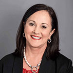
          <p class="bio">Rita has a history of strong sales leadership in Radiology and Radiation Oncology. Her
            experience
            ranges from Account Management to Product Specialist over the many years in this industry, where she
            exceeded her
            sales and profit goals. Before joining Sensus Healthcare, Rita was an Radiology Account Manager for Picker
            International, became a Product Specialist at GE Healthcare, moved into Radiation Oncology with Tomotherapy
            and
            IBA Proton Therapy.</p>
        </div>
        
        <label for="checking6">
          <div class="name">ISABELLE RAYMOND, PHD <span class="plus"></span></div>
        </label>
        <input type="checkbox" id="checking6">
        <div class="hidden">
          <span class="post">Vice President</span><br>
          <span class="post">Clinical Development</span><br>
          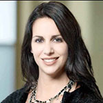
          <p class="bio">A recognized leader in the pharmaceutical and medical device industry, Dr. Raymond joined
            Sensus
            Healthcare in early 2018 to develop our clinical and scientific programs. She has spent the last 15 years in
            the
            healthcare industry with small to large sized companies such as Exeltis, Valeant and Merz. Her roles and
            responsibilities have included Medical Affairs activities, directing product launches, designing and
            executing
            clinical research programs, strategic publication planning and implementation and developing efficient
            medical
            strategies and tactics. She received both her Masters and PhD in Biomedical Science from the Université de
            Montréal.</p>
        </div>
  
        <label for="checking7">
          <div class="name">MICHAEL SARDANO <span class="plus"></span></div>
        </label>
        <input type="checkbox" id="checking7">
        <div class="hidden">
          <span class="post">Vice President & General Counsel</span><br>
          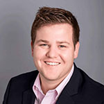
          <p class="bio">Michael Sardano has served in many capacities at Sensus Healthcare, Inc. since 2013. He is
            currently
            their General Counsel & Director of Governance & Regulatory as well as serving as Corporate Secretary.
            Michael
            works on a range of issues for Sensus, including, State and Federal Regulatory Matters, Government Affairs,
            and
            SEC Compliance. Prior to joining Sensus, Michael served on the United States Senate Rules & Administration
            Committee working on campaign finance reform and 501(c)(4) “SuperPAC” regulations during the 2012
            Presidential
            Election. A licensed attorney in the State of Florida, Michael graduated from Bentley University in 2010
            with a
            Bachelor of Science in Management & Finance and graduated from New England School of Law in 2013 receiving
            his
            Juris Doctor.</p>
        </div>
        <label for="checking8">
          <div class="name">DR. ZIV KARNI<span class="plus"></span></div></label>
        <input type="checkbox" id="checking8">
        <div class="hidden">
          <span class="post">Chief Scientific Officer</span><br>
          <span class="post">Laser Systems</span><br>
          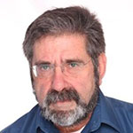
          <p class="bio">Dr. Karni joins Sensus from Alma Lasers, where he has served as Founder, CEO, President and
            Head of
            Research and Development for nearly two decades. Prior to forming Alma Lasers, he co-founded two other
            laser-based
            companies, OrZiv and LBT. Most recently, Dr. Karni established and serves as President of Zmed Laser,
            focusing on
            laser-based solutions for the minimally invasive surgical market. Overall, he holds more than 10 patents in
            the
            medical device industry and has contributed to more than 50 published works in the medical device field.</p>
        </div>
      </div>
    
    </li>
  
    <!-- Board of Directors -->
    <li>
      <input type="radio" name="tabs-0" id="tabs-0-2">
      <label for="tabs-0-2">Board of Directors</label>
      <div class="directors">
        <label for="checking11">
          <div class="name">JOSEPH C. SARDANO<span class="plus"></span></div>
          </label>
        <input type="checkbox" id="checking11">
        <div class="hidden">
          <span class="post">Chairman and Chief Executive Officer</span><br>
          
          <p class="bio">A recognized leader in the healthcare industry, Joe Sardano has spent more than 30 years in
            management and marketing. He has a successful history of introducing and commercializing new technologies
            and
            services in many areas, including electronic brachytherapy, PET and PET/CT, SPECT, MRI, lithotripsy and
            digital
            radiography. Before joining Sensus Healthcare, Sardano held leadership and management roles at CTI Molecular
            Imaging, GE Medical Systems, Siemens Medical Systems, Elscint Inc and Toshiba America Medical Systems, among
            others.</p>
        </div>
          <label for="checking12">
            <div class="name">JOHN HEINRICH, PHD<span class="plus"></span></div></label>
        <input type="checkbox" id="checking12">
        <div class="hidden">
          <span class="post">Director</span><br>
          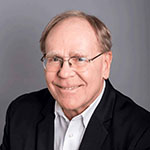
          <p class="bio" >John Heinrich has been involved in the development and management of a wide range of diagnostic
            imaging, therapeutic, medical diagnostic and scientific instrument companies for more than 25 years. He
            played a key role in the development of mobile MRI systems in the early 1980s and served as Vice President
            of MRI products at Technicare Corporation. Over the past 15 years, his responsibilities have included
            serving as: President and Chief Operating Officer of Technomed International USA Inc., a leading developer
            and marketer of therapeutic technology; President and Chief Operating Officer of Summit World Trade, a
            diversified group of health care and technology companies; President and Chief Executive Officer of Otsuka
            Electronics USA Inc., a developer and marketer of medical and scientific equipment; and President and Chief
            Operating Officer of Meretek Diagnostics Inc., a developer and marketer of medical diagnostics. Dr. Heinrich
            was responsible for the sales of Otsuka’s medical and scientific equipment businesses to Elscint Ltd. and
            Varian Instruments, respectively, along with the acquisition of Cambridge Isotope Laboratories and Meretek
            Diagnostics. He is also a cofounder and director of Acuitas Medical, a developer of unique MRI software, and
            managing partner of Revolution NMR, LLC and Kansas Analytical Services, LLC.</p>
          <span>Audit Committee</span><br>
          <span>Nominating & Corporate Governance Committee</span>
        </div>
          <label for="checking13">
            <div class="name">BILL MCCALL<span class="plus"></span></div></label>
        <input type="checkbox" id="checking13">
        <div class="hidden">
          <span class="post">Director</span><br>
          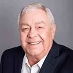
          <p class="bio">Bill McCall has served as a financial advisor and portfolio manager for over 43 years and is
            currently a Managing Director of Heritage Advisory Group, a financial advisory practice of Ameriprise
            Financial Services Inc. Other business activities include Managing Partner of Investors Capital Alliance
            LLC, a consulting company; CEO of WMW Partners LLC, a holding company; member of Pandora Mineral Resources
            LLC and Board member of Cherokee Farm Partners Inc., an entity of the University of Tennessee Research
            Foundation. Bill holds a Bachelor of Science Degree in Business Administration with a concentration in
            Finance and Marketing from the University of Tennessee and he received a Chartered Wealth Advisor
            designation from Michigan State University.</p>
          <span>Audit Committee</span><br>
          <span>Compensation Committee</span><br>
          <span>Nominating & Corporate Governance Committee</span>
        </div>
          <label for="checking14">
            <div class="name">SAM O’REAR<span class="plus"></span></div></label>
        <input type="checkbox" id="checking14">
        <div class="hidden">
          <span class="post">Director</span><br>
          
          <p class="bio">Sam O’Rear has 40 years of experience in the healthcare industry as a clinician, a sales and
            marketing director, vice president, general manager, owner and principal in several healthcare services
            businesses. His experience as clinician in the ancillary hospital services was garnered primarily in the UAB
            Health System (1970-74). From 1974 to1990, he held sales and marketing positions in Siemens and GE
            Healthcare. O’Rear rose from management posts in sales, financing, asset management and marketing to vice
            president and general manager of X-Ray Business. O’Rear left GE to become the chief operating officer for
            Medical Imaging Centers of America in 1990. That year, he also founded The Innovation Group, Inc. (TIGI).
            Over the years, he has acquired several consulting firms to expand TIGI into a multi-partner healthcare
            consultancy. Today, TIGI provides commercialization services to a client base extending from start-ups to
            Fortune 500 companies represented by GE, Philips, Toshiba, Xerox, Roche, HCA, VHA, MedAssets, Compass Group,
            Cobalt, Sysmex, Cobalt, etc. O’Rear holds a Bachelor of Science in Chemical Engineering and a Master’s in
            Psychology. He is the senior partner of Total Innovation Group, Inc., and is an investor, principal and
            board member in several start-ups in the healthcare industry (Data Advantage, Remcare, Sensus, UP Labs).</p>
          <span>Audit Committee</span><br>
          <span>Compensation Committee</span><br>
          <span>Nominating & Corporate Governance Committee</span>
        </div>
          <label for="checking15">
            <div class="name">ANTHONY B. PETRELLI<span class="plus"></span></div></label>
        <input type="checkbox" id="checking15">
        <div class="hidden">
          <span class="post">Director</span><br>
          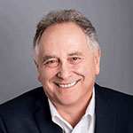
          <p class="bio">Mr. Petrelli received his BS in Business (Finance) and his Masters of Business Administration
            (MBA) from the University of Colorado and a Masters of Arts in Counseling from Denver Seminary. He began his
            career in 1972 and since that time has managed the Corporate Finance departments for Bosworth, Sullivan &
            Co., Hanifen,Imhoff, Inc. and his current position at NTB Financial Corporation. Mr. Petrelli has served on
            numerous regulatory and industry committees including service on the FINRA Corporate Finance Committee, the
            NASD Small Firm Advisory Board, the FINRA Fixed Income Committee, the FINRA District Surveillance Committee,
            District 3 and as the Chairman of the FINRA District Business Conduct Committee, District 3, FINRA Statutory
            Disqualification Board and as a FINRA Arbitrator and as a member of the Task Force on Future of Shared State
            and Federal Securities Regulation, North American Securities Administrators Association, Inc. (NASAA) among
            others. Mr. Petrelli has also served as the Chairman of the Regional Investment Bankers Association. Mr.
            Petrelli has been involved in many aspects of the securities industry. He has had extensive experience in
            his 40 years in the areas of operations, sales, trading, management of sales, underwriting and corporate
            finance.</p>
        </div>
      </div>
    </li>
    
    <!-- Board Committees -->
    <li>
      <input type="radio" name="tabs-0" id="tabs-0-3"/>
      <label for="tabs-0-3">Board Committees</label>
      <div class="committees">
        <div class="table-row">
          <div class="table-cell"></div>
          <div class="table-cell">Audit Committee</div>
          <div class="table-cell">Compensation Committee</div>
          <div class="table-cell">Nominating & Corporate Governance Committee</div>
        </div>
        <div class="table-row">
          <div class="table-cell">Joseph C. Sardano</div>
          <div class="table-cell"></div>
          <div class="table-cell"></div>
          <div class="table-cell"></div>
        </div>
        <div class="table-row">
          <div class="table-cell">John Heinrich, PhD</div>
          <div class="table-cell"></div>
          <div class="table-cell"></div>
          <div class="table-cell"></div>
        </div>
        <div class="table-row">
          <div class="table-cell">Bill McCall</div>
          <div class="table-cell"></div>
          <div class="table-cell"></div>
          <div class="table-cell"></div>
        </div>
        <div class="table-row">
          <div class="table-cell">Sam O’Rear</div>
          <div class="table-cell"></div>
          <div class="table-cell"></div>
          <div class="table-cell"></div>
        </div>
        <div class="table-row">
          <div class="table-cell">Anthony B. Petrelli</div>
          <div class="table-cell"></div>
          <div class="table-cell"></div>
          <div class="table-cell"></div>
        </div>
        <span class="bio">Chair</span><br>
        <span class="bio">Member</span>
        <div>
          <h2 class="post bcommittes">Audit Committee</h2>
          <label for="checking42">
            <span class="bio pointer">John Heinrich, PhD</span></label><br>
          <input type="checkbox" id="checking42">
          <div class="hidden">
            
            <p class="bio" >
            John Heinrich has been involved in the development and management of a wide range of diagnostic
            imaging, therapeutic, medical diagnostic and scientific instrument companies for more than 25 years. He
            played a key role in the development of mobile MRI systems in the early 1980s and served as Vice President
            of MRI products at Technicare Corporation. Over the past 15 years, his responsibilities have included
            serving as: President and Chief Operating Officer of Technomed International USA Inc., a leading developer
            and marketer of therapeutic technology; President and Chief Operating Officer of Summit World Trade, a
            diversified group of health care and technology companies; President and Chief Executive Officer of Otsuka
            Electronics USA Inc., a developer and marketer of medical and scientific equipment; and President and Chief
            Operating Officer of Meretek Diagnostics Inc., a developer and marketer of medical diagnostics. Dr. Heinrich
            was responsible for the sales of Otsuka’s medical and scientific equipment businesses to Elscint Ltd. and
            Varian Instruments, respectively, along with the acquisition of Cambridge Isotope Laboratories and Meretek
            Diagnostics. He is also a cofounder and director of Acuitas Medical, a developer of unique MRI software, and
            managing partner of Revolution NMR, LLC and Kansas Analytical Services, LLC.</p>
          </div>
          <label for="checking44">
            <span class="bio pointer">Sam O’Rear</span></label><br>
          <input type="checkbox" id="checking44">
          <div class="hidden">
              
              <p class="bio">Sam O’Rear has 40 years of experience in the healthcare industry as a clinician, a sales and
                marketing director, vice president, general manager, owner and principal in several healthcare services
                businesses. His experience as clinician in the ancillary hospital services was garnered primarily in the UAB
                Health System (1970-74). From 1974 to1990, he held sales and marketing positions in Siemens and GE
                Healthcare. O’Rear rose from management posts in sales, financing, asset management and marketing to vice
                president and general manager of X-Ray Business. O’Rear left GE to become the chief operating officer for
                Medical Imaging Centers of America in 1990. That year, he also founded The Innovation Group, Inc. (TIGI).
                Over the years, he has acquired several consulting firms to expand TIGI into a multi-partner healthcare
                consultancy. Today, TIGI provides commercialization services to a client base extending from start-ups to
                Fortune 500 companies represented by GE, Philips, Toshiba, Xerox, Roche, HCA, VHA, MedAssets, Compass Group,
                Cobalt, Sysmex, Cobalt, etc. O’Rear holds a Bachelor of Science in Chemical Engineering and a Master’s in
                Psychology. He is the senior partner of Total Innovation Group, Inc., and is an investor, principal and
                board member in several start-ups in the healthcare industry (Data Advantage, Remcare, Sensus, UP Labs).</p>
          </div>
  
          <label for="checking48">
            <span class="bio pointer">Bill McCall</span></label><br>
          <input type="checkbox" id="checking48">
          <div class="hidden">
            
            <p class="bio">Bill McCall has served as a financial advisor and portfolio manager for over 43 years and is
              currently a Managing Director of Heritage Advisory Group, a financial advisory practice of Ameriprise
              Financial Services Inc. Other business activities include Managing Partner of Investors Capital Alliance
              LLC, a consulting company; CEO of WMW Partners LLC, a holding company; member of Pandora Mineral Resources
              LLC and Board member of Cherokee Farm Partners Inc., an entity of the University of Tennessee Research
              Foundation. Bill holds a Bachelor of Science Degree in Business Administration with a concentration in
              Finance and Marketing from the University of Tennessee and he received a Chartered Wealth Advisor
              designation from Michigan State University.</p>
          </div>
          
          <h2 class="post bcommittes">Compensation Committee</h2>
          <label for="checking45">
            <span class="bio pointer">Sam O’Rear</span></label><br>
          <input type="checkbox" id="checking45">
          <div class="hidden">
            
            <p class="bio">Sam O’Rear has 40 years of experience in the healthcare industry as a clinician, a sales and
              marketing director, vice president, general manager, owner and principal in several healthcare services
              businesses. His experience as clinician in the ancillary hospital services was garnered primarily in the UAB
              Health System (1970-74). From 1974 to1990, he held sales and marketing positions in Siemens and GE
              Healthcare. O’Rear rose from management posts in sales, financing, asset management and marketing to vice
              president and general manager of X-Ray Business. O’Rear left GE to become the chief operating officer for
              Medical Imaging Centers of America in 1990. That year, he also founded The Innovation Group, Inc. (TIGI).
              Over the years, he has acquired several consulting firms to expand TIGI into a multi-partner healthcare
              consultancy. Today, TIGI provides commercialization services to a client base extending from start-ups to
              Fortune 500 companies represented by GE, Philips, Toshiba, Xerox, Roche, HCA, VHA, MedAssets, Compass Group,
              Cobalt, Sysmex, Cobalt, etc. O’Rear holds a Bachelor of Science in Chemical Engineering and a Master’s in
              Psychology. He is the senior partner of Total Innovation Group, Inc., and is an investor, principal and
              board member in several start-ups in the healthcare industry (Data Advantage, Remcare, Sensus, UP Labs).</p>
          </div>
  
          <label for="checking47">
            <span class="bio pointer">Bill McCall</span></label><br>
          <input type="checkbox" id="checking47">
          <div class="hidden">
            
            <p class="bio">Bill McCall has served as a financial advisor and portfolio manager for over 43 years and is
              currently a Managing Director of Heritage Advisory Group, a financial advisory practice of Ameriprise
              Financial Services Inc. Other business activities include Managing Partner of Investors Capital Alliance
              LLC, a consulting company; CEO of WMW Partners LLC, a holding company; member of Pandora Mineral Resources
              LLC and Board member of Cherokee Farm Partners Inc., an entity of the University of Tennessee Research
              Foundation. Bill holds a Bachelor of Science Degree in Business Administration with a concentration in
              Finance and Marketing from the University of Tennessee and he received a Chartered Wealth Advisor
              designation from Michigan State University.</p>
          </div>
          
          <h2 class="post bcommittes">Nominating & Corporate Governance Committee</h2>
          <label for="checking49">
            <span class="bio pointer">Bill McCall</span></label><br>
          <input type="checkbox" id="checking49">
          <div class="hidden">
            
            <p class="bio">Bill McCall has served as a financial advisor and portfolio manager for over 43 years and is
              currently a Managing Director of Heritage Advisory Group, a financial advisory practice of Ameriprise
              Financial Services Inc. Other business activities include Managing Partner of Investors Capital Alliance
              LLC, a consulting company; CEO of WMW Partners LLC, a holding company; member of Pandora Mineral Resources
              LLC and Board member of Cherokee Farm Partners Inc., an entity of the University of Tennessee Research
              Foundation. Bill holds a Bachelor of Science Degree in Business Administration with a concentration in
              Finance and Marketing from the University of Tennessee and he received a Chartered Wealth Advisor
              designation from Michigan State University.</p>
          </div>
  
          <label for="checking43">
            <span class="bio pointer">John Heinrich, PhD</span></label><br>
          <input type="checkbox" id="checking43">
          <div class="hidden">
            
            <p class="bio" >
              John Heinrich has been involved in the development and management of a wide range of diagnostic
              imaging, therapeutic, medical diagnostic and scientific instrument companies for more than 25 years. He
              played a key role in the development of mobile MRI systems in the early 1980s and served as Vice President
              of MRI products at Technicare Corporation. Over the past 15 years, his responsibilities have included
              serving as: President and Chief Operating Officer of Technomed International USA Inc., a leading developer
              and marketer of therapeutic technology; President and Chief Operating Officer of Summit World Trade, a
              diversified group of health care and technology companies; President and Chief Executive Officer of Otsuka
              Electronics USA Inc., a developer and marketer of medical and scientific equipment; and President and Chief
              Operating Officer of Meretek Diagnostics Inc., a developer and marketer of medical diagnostics. Dr. Heinrich
              was responsible for the sales of Otsuka’s medical and scientific equipment businesses to Elscint Ltd. and
              Varian Instruments, respectively, along with the acquisition of Cambridge Isotope Laboratories and Meretek
              Diagnostics. He is also a cofounder and director of Acuitas Medical, a developer of unique MRI software, and
              managing partner of Revolution NMR, LLC and Kansas Analytical Services, LLC.</p>
          </div>
  
          <label for="checking46">
            <span class="bio pointer">Sam O’Rear</span></label><br>
          <input type="checkbox" id="checking46">
          <div class="hidden">
            
            <p class="bio">Sam O’Rear has 40 years of experience in the healthcare industry as a clinician, a sales and
              marketing director, vice president, general manager, owner and principal in several healthcare services
              businesses. His experience as clinician in the ancillary hospital services was garnered primarily in the UAB
              Health System (1970-74). From 1974 to1990, he held sales and marketing positions in Siemens and GE
              Healthcare. O’Rear rose from management posts in sales, financing, asset management and marketing to vice
              president and general manager of X-Ray Business. O’Rear left GE to become the chief operating officer for
              Medical Imaging Centers of America in 1990. That year, he also founded The Innovation Group, Inc. (TIGI).
              Over the years, he has acquired several consulting firms to expand TIGI into a multi-partner healthcare
              consultancy. Today, TIGI provides commercialization services to a client base extending from start-ups to
              Fortune 500 companies represented by GE, Philips, Toshiba, Xerox, Roche, HCA, VHA, MedAssets, Compass Group,
              Cobalt, Sysmex, Cobalt, etc. O’Rear holds a Bachelor of Science in Chemical Engineering and a Master’s in
              Psychology. He is the senior partner of Total Innovation Group, Inc., and is an investor, principal and
              board member in several start-ups in the healthcare industry (Data Advantage, Remcare, Sensus, UP Labs).</p>
          </div>
        </div>
        <div class="circles">
          <span class="circle circle1">
            <a href="https://investors.sensushealthcare.com/download/SRTS+Fact+sheet+-+November+2018.pdf">
              <span class="circle_text">FACT SHEET</span></a>
            <br>
          
          </span>
          <span class="circle circle2">
            <a href="http://investors.sensushealthcare.com/download/SRTS+presentation+-+March+2019.pdf">
              <span class="circle_text">INVESTOR<br>PRESENTATION</span></a>
          
          </span>
      </div>
      </div>
    </li>
    
    <!-- Investor Resources -->
    <li>
      <input type="radio" name="tabs-0" id="tabs-0-4"/>
      <label for="tabs-0-4">Investor Resources</label>
      <div class="investorResources">
    
        <label for="checking22">
          <div class="faq_name">1. What is Sensus Healthcare?<span class="plus"></span></div>
        </label>
        <input type="checkbox" id="checking22">
        <div class="hidden">
          <p class="bio">Sensus Healthcare is a medical device company specializing in the treatment of non-melanoma skin cancers and other skin conditions, such as keloids, with superficial radiation therapy.</p>
        </div>
    
        <label for="checking23">
          <div class="faq_name">2. What year was Sensus Healthcare founded?<span class="plus"></span></div>
        </label>
        <input type="checkbox" id="checking23">
        <div class="hidden">
          <p class="bio">Sensus Healthcare was founded in 2010.</p>
        </div>
  
      <label for="checking24">
          <div class="faq_name">3. Where is Sensus Healthcare headquartered?<span class="plus"></span></div>
        </label>
        <input type="checkbox" id="checking24">
        <div class="hidden">
          <p class="bio">851 Broken Sound Parkway, NW #215<br>
            Boca Raton, Fla. 33487<br>
            Toll Free: 800-324-9890<br>
            Phone: 561-922-5808<br>
            Fax: 561-948-2071</p>
        </div>
  
        <label for="checking25">
          <div class="faq_name">4. Who are Sensus Healthcare’s top executives?<span class="plus"></span></div>
        </label>
        <input type="checkbox" id="checking25">
        <div class="hidden">
          <p class="bio">Meet our management team.</p>
        </div>
        
        <label for="checking26">
          <div class="faq_name">5. Where is Sensus Healthcare incorporated?<span class="plus"></span></div>
        </label>
        <input type="checkbox" id="checking26">
        <div class="hidden">
          <p class="bio">Sensus Healthcare is incorporated in the state of Delaware.</p>
        </div>
        
        <label for="checking27">
          <div class="faq_name">6. When did Sensus Healthcare go public and at what price?<span class="plus"></span></div>
        </label>
        <input type="checkbox" id="checking27">
        <div class="hidden">
          <p class="bio">Sensus Healthcare priced its initial public offering on June 2, 2016, offering 2,000,000 units at $5.50 per unit. Each unit consists of one share of common stock and a three-year warrant to purchase one share of common stock at an exercise price of $6.75 per share.</p>
        </div>
  
        <label for="checking28">
          <div class="faq_name">7. Where does Sensus Healthcare trade and what is the ticker symbol?<span class="plus"></span></div>
        </label>
        <input type="checkbox" id="checking28">
        <div class="hidden">
          <p class="bio">Sensus Healthcare units trade on NASDAQ under the symbol “SRTSU.” The units will separate at the earlier of (i) 52 days following the date of the offering, or (ii) such earlier date as may be determined by the representatives of the underwriters.<br>
            Upon separation of the units, Sensus Healthcare will trade on NASDAQ as common stock under the symbol "SRTS" and warrants under the symbol "SRTSW" as outlined below.<br>
            Sensus Healthcare common stock trades on NASDAQ under the symbol “SRTS.”<br>
            Each warrant issued as part of a unit is exercisable for one share of common stock commencing upon separating and expiring at 5:00 p.m. ET on the third anniversary of the date of issuance. The exercise price is $6.75 per share.</p>
        </div>
  
        <label for="checking29">
          <div class="faq_name">8. When are quarterly financial results announced and how can I stay informed?<span class="plus"></span></div>
        </label>
        <input type="checkbox" id="checking29">
        <div class="hidden">
          <p class="bio">All events will be reported on this site within the timeframe allotted by the SEC (45 days from the end of the quarter; 90 days from the end of the fiscal year December 31st), unless announced otherwise.</p>
        </div>
  
        <label for="checking30">
          <div class="faq_name">9. How do I invest in Sensus Healthcare?<span class="plus"></span></div>
        </label>
        <input type="checkbox" id="checking30">
        <div class="hidden">
          <p class="bio">You can purchase units in the Company through a registered broker-dealer of your choice. You cannot purchase units directly from the Company. For information about investing in stocks, you may want to consult a financial professional to explain to you the risks and suitability when investing.</p>
        </div>
  
        <label for="checking31">
          <div class="faq_name">10. Does Sensus Healthcare offer a Direct Stock Purchase Plan (DSPP or DRIP)?<span class="plus"></span></div>
        </label>
        <input type="checkbox" id="checking31">
        <div class="hidden">
          <p class="bio">At this time, Sensus Healthcare does not offer a direct stock purchase plan.</p>
        </div>
  
        <label for="checking32">
          <div class="faq_name">11. Does Sensus Healthcare pay a dividend?<span class="plus"></span></div>
        </label>
        <input type="checkbox" id="checking32">
        <div class="hidden">
          <p class="bio">At this time, Sensus Healthcare does not pay a dividend.</p>
        </div>
  
        <label for="checking33">
          <div class="faq_name">12. What is Sensus Healthcare’s fiscal year?<span class="plus"></span></div>
        </label>
        <input type="checkbox" id="checking33">
        <div class="hidden">
          <p class="bio">Sensus Healthcare’s fiscal year ends on December 31.</p>
        </div>
  
        <label for="checking34">
          <div class="faq_name">13. Who is Sensus Healthcare's transfer agent?<span class="plus"></span></div>
        </label>
        <input type="checkbox" id="checking34">
        <div class="hidden">
          <p class="bio">The transfer agent and registrar for the company's common stock and warrants is<br>
            American Stock Transfer & Trust Company, LLC<br>
            Operations Center<br>
            6201 15th Avenue<br>
            Brooklyn, NY 11219<br>
            Telephone: (800) 937-5449</p>
        </div>
  
        <label for="checking35">
          <div class="faq_name">14. Where do I find SEC filings?<span class="plus"></span></div>
        </label>
        <input type="checkbox" id="checking35">
        <div class="hidden">
          <p class="bio">You can go to the official SEC site or you can follow this link to our page.</p>
        </div>
  
        <label for="checking36">
          <div class="faq_name">15. Who are Sensus Healthcare’s independent auditors?<span class="plus"></span></div>
        </label>
        <input type="checkbox" id="checking36">
        <div class="hidden">
          <p class="bio">Marcum LLP. </p>
        </div>
  
        <label for="checking37">
          <div class="faq_name">16. Do you have another question that hasn’t been answered?<span class="plus"></span></div>
        </label>
        <input type="checkbox" id="checking37">
        <div class="hidden">
          <p class="bio">Please submit investor questions by emailing us at: sensus@kcsa.com.</p>
        </div>
        
        <div class="investorContacts">
          <h2 class="post">INVESTOR CONTACTS:</h2>
          <div class="bio">LHA Strategic Communications</div>
          <div class="bio">Kim Sutton Golodetz</div>
          <div class="bio">212-838-3777</div>
          <div class="bio">kgolodetz@lhai.com</div>
        </div>
      </div>
    </li>
  </ul>
</div>
</body>
</html>